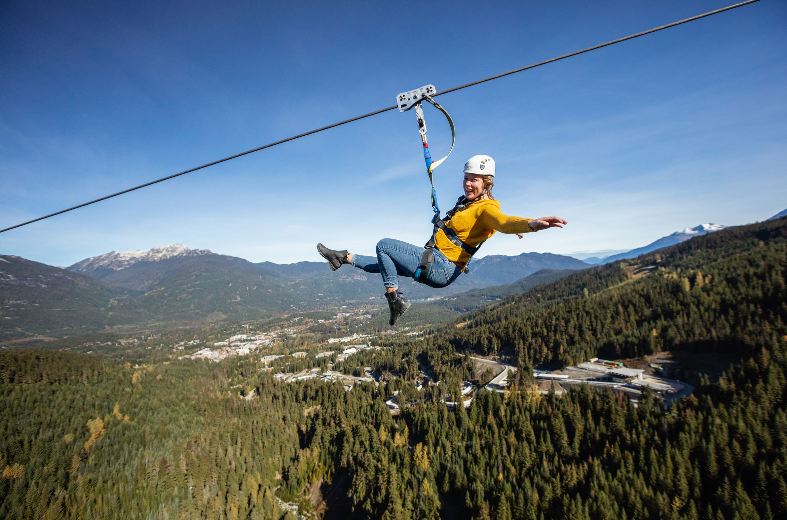
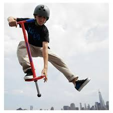
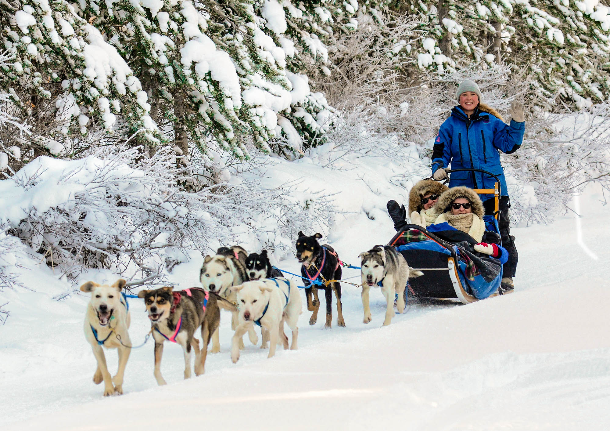
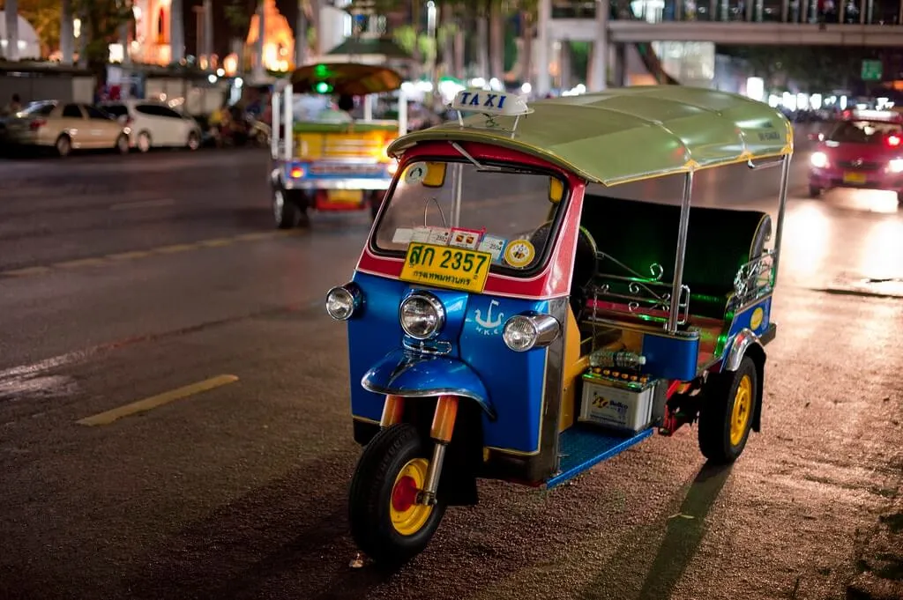

Modes of Transportation
Although driving is a good form of transportation in general, it is not good for long distances. Here is a list of the best long distance traveling options.
1. Ziplines! Use ziplines in your day to day transport as well as for long distances. You can zipline to Canada or France or Japan! If you have enough industrial cable and patience, try it for yourself!
2. Pogo Stick. You can pogo anywhere you want without getting tired. Up a mountain, across the sea, to the nearest Waffle House, whatever you want.
3. Dog sleds, baby! Take your 15 huskies, strap 'em to a sled and ride into the sunset. You can ride in the snow, in the ice, maybe even in Wisconsin.
4. Real talk for a minute. Tuk Tuks are the most excellent form of transport in the world. Imagine you just finished eating a wonderful crab pizza at a restaurant in Bangkok, and you need to get back to your hotel. Boom! Tuk Tuk. Tuk Tuks are everywhere, so convient, and super fun. If you ever have the chance to ride one, I highly reccommend it.
